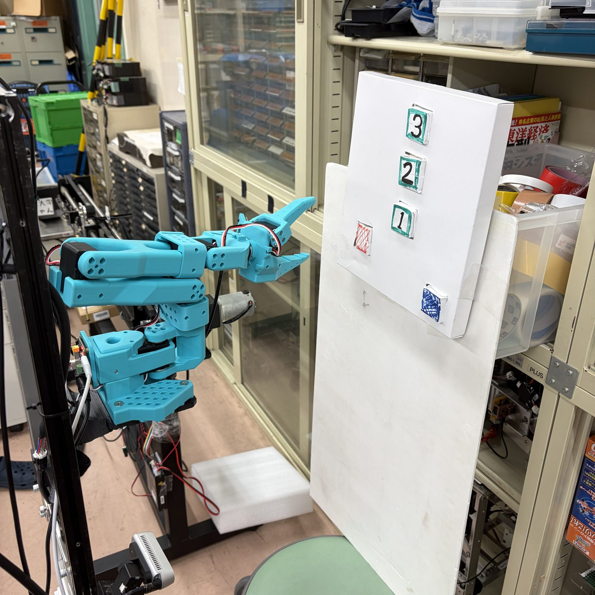
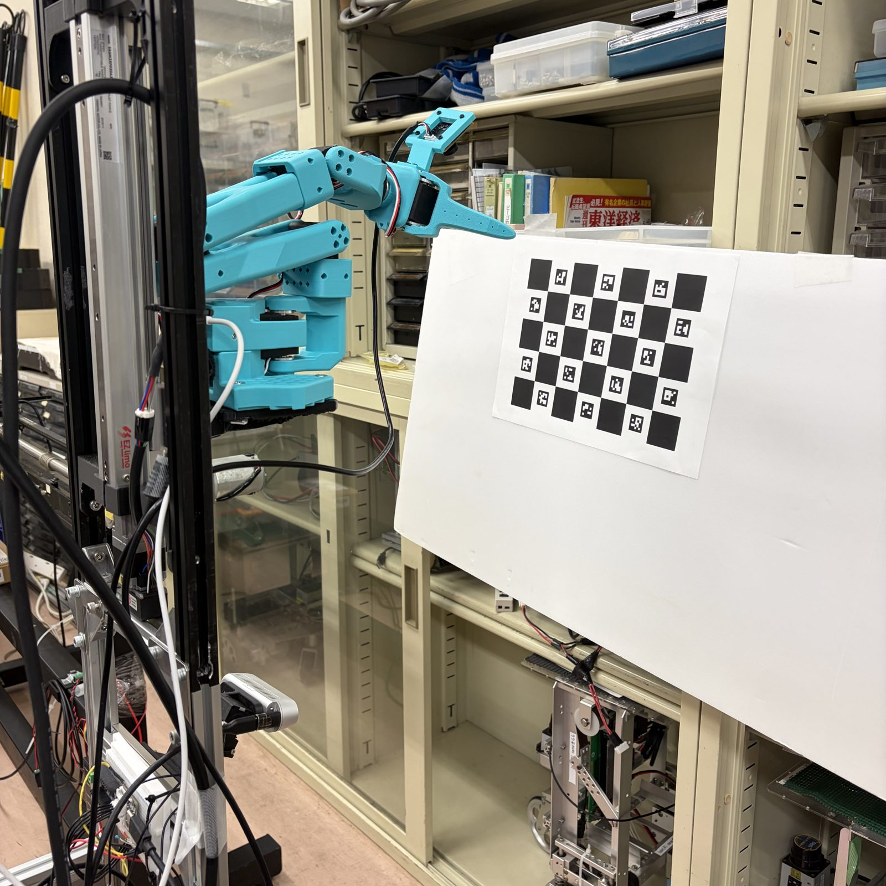
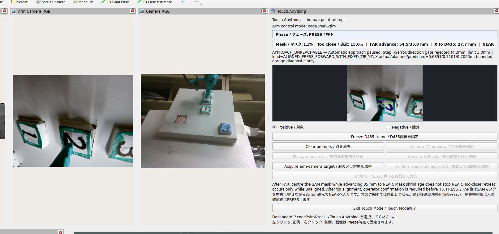
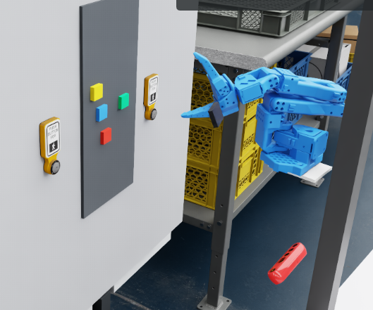
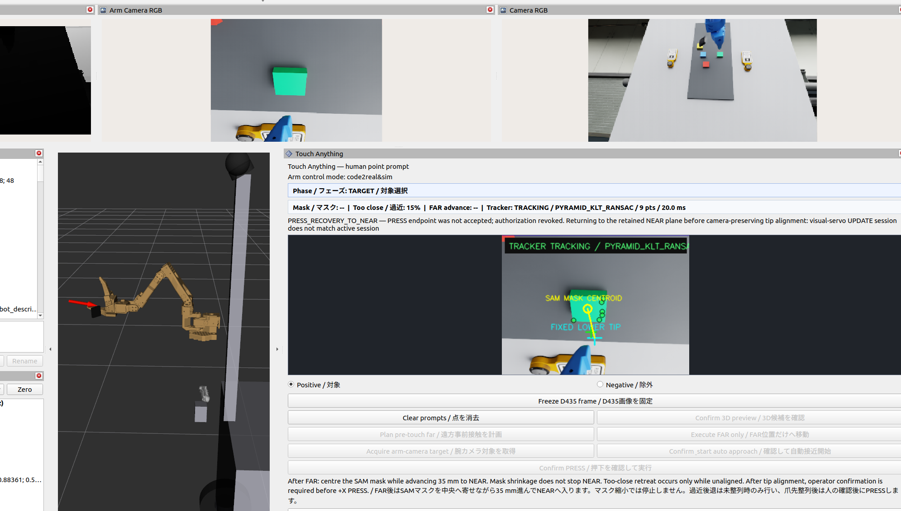
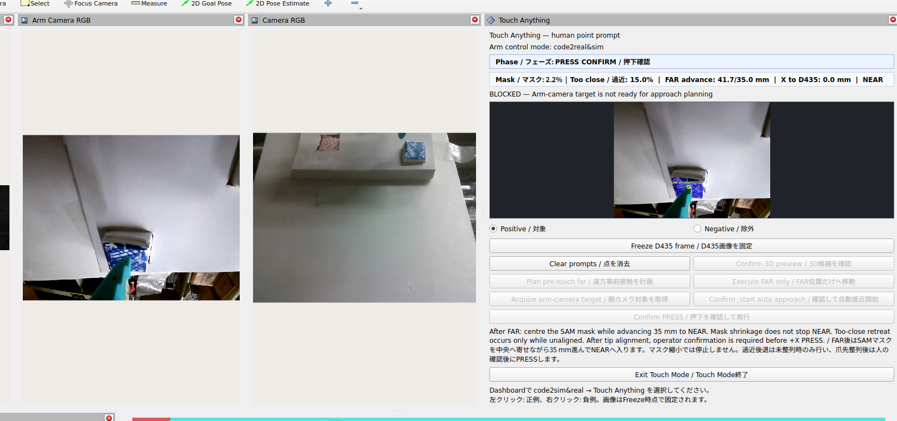
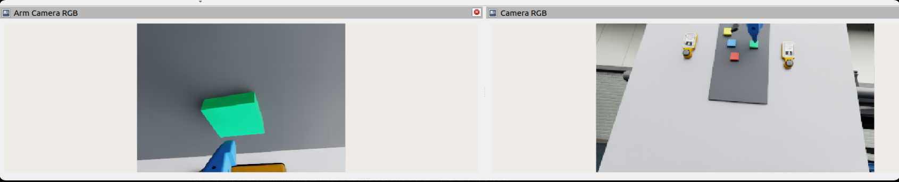
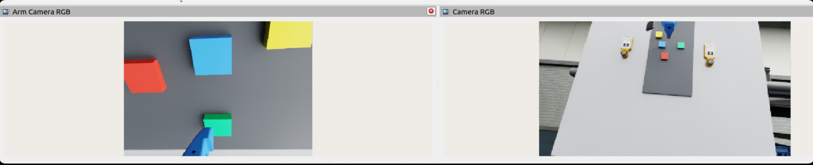
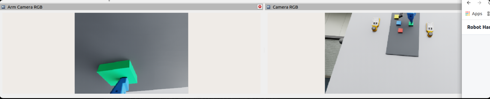

ROS 2 PACKAGE — touch_anything / SO-101
LLMによる対象理解（現在は人が代替）と、幾何・視覚サーボによる従来型制御を組み合わせ、指定した任意の対象にロボットアームで接触するシステム。
← 週次報告（実機 ARM 追加・Touch Anything）へ戻る
Touch Anything は、「どれを触るか」という意図理解（将来はLLM／VLM）と、「どう安全に近づき、どう触るか」という幾何・視覚サーボによる従来型制御を組み合わせて、任意の対象物にロボットアームで接触するためのシステム。最終形では、自然言語の指示からLLM/VLMが対象を認識・指示し、アーム側がそれを受けて自律的に接近・接触する構成を目指している。
V1時点ではLLM/VLMによる「対象の認識・指示」部分は未実装で、操作者がD435の画像上で対象を1点クリックすることで代替している。これは恒久的な仕様ではなく暫定の代替であり、その下流にある接近・整列・接触・成功判定のロジックは、指示の出し手が人であってもLLMであっても共通して使えるように設計している。
つまり Touch Anything は「認識・意図理解レイヤー（将来LLM／現在は人）」と「接近・整列・接触の制御レイヤー（幾何・視覚サーボ・状態機械）」を分離したシステムで、V1はまず後者を実機で確立することを目的にしている。
| 項目 | 内容 | 備考 |
|---|---|---|
| 移動ベース | 全向駆動台車 | FAST-LIO2＋GICPで自己位置推定、Nav2 MPPIでナビゲーション。Touch中はベース静止固定 |
| リフト | 0–2500 mm 昇降機構 | 現状は速度×時間の積分推定のみで未参照。V1では人が確認した固定位置で運用 |
| アーム | SO-ARM101（6軸） | Feetech STS3215 ×6、12 V駆動。followerのみ接続、leaderは未接続 |
| 手先カメラ | Sonix/ARC USB2.0 CAM1 | 640×480 RGB（深度なし）。爪先に対して剛体固定、NEAR/PRESSの視覚閉ループに使用 |
| 主カメラ | RealSense D435 | Pan/Tilt機構上。RGB-D、対象の粗い3D位置（FARの目標点）取得に使用 |
| PC | Intel Core i5-1340P／RAM 30 GB | CUDAなし。SAM 2.1等はCPU推論 |
アーム設置は現状12 V卓上運用。移動ベースへの搭載・リフト連動は本文執筆時点で今後の課題。

下流の制御ロジックは、認識レイヤーが人かLLMかに関わらず同じものが使えるよう、次の考え方で組み立てている。
実際の作業は「識別 → 方位・pose決定 → 目標前方へ移動 → Armカメラへ引き継ぎ → 接近 → 押下」という一連の流れに沿って積み上がってきた。各段階でやったことを短い動詞見出しで振り返る。
D435画像上で対象を人が指定し、SAMで領域を切り出す。
対象の3D位置と、そこへ向かうためのアーム姿勢を精度よく決めるための較正を積み上げる。

Arm gatewayの安全な実行基盤を用意し、参照姿勢へ向けてガード付きでFAR接近を行う。
FARで対象付近まで来たらD435からArmカメラへ対象を引き継ぎ、人が同一対象であることを再確認する。
FARでマスクを画面中心に保ちながら+X方向へ進め、実測+Xが35 mmを超えたらNEARへ不可逆に切り替え、固定爪先とSAM質心の画素関係でY/Zを追い込む。
整列が整ったら人がPressを確認し、+X方向へ押し込む。失敗してもやり直さずNEARへ後退して再整列する。
HIGH／MID／LOWなど複数の実機高さでPressデモが完了。実機アームは軽量な対象物への接触・押し込みまで到達している。直近の主な誤差要因は認識・計画から、荷重下の実行誤差や起動直後の過渡振動へと移ってきている。

| 処理時間の目安 | 中央値 |
|---|---|
| SAM初回ロード〜準備完了 | 7.86 s |
| 既ロード時のD435再取得 | 3.70 s |
| 1ステップ実行〜安定 | 1.53 s |
| Arm側の自動再取得 | 3.90 s |
IK／Preview自体は数msで律速要因ではない。主なコストはSAM再分割と stop–observe–execute の繰り返し。
実機で踏んだ問題と、その対策を時系列にまとめる。
初期の視覚定位偏差（解消済み）
開発初期の実験で、初期位置の推定に誤差があり、最終接近位置が目標からずれた。
追加の Calibration を実施し、カメラと ARM の位置関係を補正することで改善した。
固定TFの流用リスク
既存D435はナビゲーション用の固定姿勢TFで、精密タスクにそのまま流用すると誤差の原因になる。
手先カメラは最初から完全な関節TFチェーンに組み込み、露光時刻に対応するTFを都度引く設計にした。
USBデバイス名の衝突
follower・lift・leaderが過去に /dev/ttyACM0 等のUSB列挙名を共有しており、誤ったポートを開く危険があった。
USBシリアル／by-id で安定識別し、抜き差し差分で対応関係を確認した上で固定した。
FAR⇄NEARの往復振動
FARとNEARの判定条件が曖昧だと、境界付近で行ったり来たりして接近が進まなくなる。
実測+X進捗が基準（35 mm）を超えた時点でNEARへ不可逆にラッチし、以後Y/Z補正がXへ多少結合してもFARへは戻さないようにした。
画像上の整列条件の限界（→ 09 で詳述）
NEARの整列は、固定した下爪先端の画素位置とSAM検出質心の画素位置を一致させる設計。ところがこれは「カメラ・爪先・対象が同じ視線上に並んだ」ことしか保証せず、その視線上のどこに対象があるか（奥行き方向のずれ）は分からない。実機では、Y/Z整列用のIKが手首関節を固定したまま肩・肘だけで位置を解いていたため、カメラごと回転させて安価に「整列して見える」解に落ち着き、実際には対象から離れていく事例も発生した。
IK が手首を固定したまま安易に「整列して見える」解へ落ちる挙動は、ツール姿勢に残差拘束を加えて緩和した。ただしこれは対症療法であり、単眼の手先カメラそのものが持つ視差・深度のあいまいさという、より根本的な構造的課題が残っていることが、後続の Isaac Sim 検証で改めて明確になった。現時点の理解と対応方針は 09 にまとめている。
荷重下でのZ方向系統誤差
実際にアームが荷重を受けると、コマンド通りには動かず、特にZ方向に約21–25 mmの系統的な下振れが生じていた。
実測データからフィットしたフィードフォワード補正（フェーズごとのgain／bias）を追加した上で、各ステップの最終判定は必ず実測TFで行い、コマンド位置を到達の証拠として扱わないようにした。
遮蔽・追跡ずれによる誤対象化と過早成功判定
爪先による遮蔽やSAMの再分割ゆらぎで、対象マスクが縮小・分裂したり、別の物体に飛び移ったりすることがあった。
人が対象を確認した瞬間のLab色を不変の基準として保持し、色変化に加えて残りX距離とTip―質心誤差という幾何条件を同時に満たした場合のみ成功と判定するようにした。
起動直後の過渡振動（未解決・継続調査）
動作停止から次の動作を発令した直後に、荷重による沈み込みや振動が起きることがある。固定0.75秒の空待ちでは条件によって不足・過剰になる。
固定待機を、実測Tipの10Hz安定性判定（最短0.20秒〜最長1.20秒）に置き換え済み。発令直前と初回EXECUTING時の実測位置差（startup transient）の記録も開始しており、姿勢依存の追加前送りが必要かは継続して調査中。
06 までの対策で FAR → NEAR → Press の一連は実機で成立したが、最後の精密接近と Press は依然として安定しない。ここでは、問題 → 原因 → 新しい制御構成 → 実機で見つかった問題 → 次の検証、の順に整理する。
停止・再始動を繰り返す接近方式
従来の接近は「SAM 再分割 → 軌道生成 → 実行 → 停止・整定待ち → 再観測」を 1 ステップずつ繰り返す。実際の観測間隔は約 6〜13 秒に達し、目標位置と ARM 動作の更新が不連続になっていた。
停止のたびに荷重による沈み込みや振動が起き、再始動でも新たな誤差が乗る。補償モデルが扱う誤差が、方向・姿勢・機械状態で変わる不安定なものになる。
ARM 自体の精度限界と単発視覚への依存
SO-ARM101 は低コストなアームで、絶対位置精度・繰り返し位置精度が限られる（ギアのバックラッシュや荷重による下振れ）。
ある一時点の視覚定位結果だけで最終 Press を実行すると、この機械誤差と視覚推定誤差がそのまま蓄積する。
方針は、単一の目標位置で最終運動を決めるのをやめ、接近中は視覚特徴量を実時間で計算し続け、画像誤差のフィードバックで運動方向を修正しながら最終 Press 位置へ収束させること（画像ベース視覚サーボ）。SAM は「どの物体か」を最初に確定する役割だけを担い、その後の高速な更新は軽量な追跡に任せる。
| 層 | 手法 | 頻度 | 役割 |
|---|---|---|---|
| 目標初期化 | SAM 2.1 + 人の確認 | 1 回 | 意味的な目標と初期マスクの確定 |
| 連続追跡 | Pyramid KLT | 約 25 Hz | 目標位置・マスクの連続更新（SAM の再実行なし） |
| 再同定 | ORB 特徴（設計） | 必要時 | KLT が外れたときの目標再特定。両方失敗した場合のみ SAM 再実行・人の再確認 |
| 視覚制御 | 画像誤差の閉ループ | 10 Hz | Y/Z の整列と +X の前進を連続的に補正 |
| Press 判定 | 人が確認した目標領域の色・外観変化 | 画像レート | ボタンの変色や対象の移動で成功を判定 |
目標の同一性は、人が確認した時点の基準（キーフレーム・マスク・色）を不変に保持する。追跡結果で基準を更新し続けると、背景へ漂流したときに背景を永久に「目標」と学習してしまうため。
視覚側が連続になっても、指令が「軌道を最後まで実行 → 停止 → 次」のままでは停止・再始動が残る。そこで、VLA の action chunking に近い形で、0.5 秒分（10 ステップ）の関節目標をまとめて送り、新しい観測のたびに未実行の後半を置き換える方式にした。学習モデルではなく幾何・IK による生成で、既存の安全チェーン（関節範囲・速度制限・電流・温度など）はそのまま有効。
| 項目 | 値 | 意味 |
|---|---|---|
| 動作ブロック | 10 × 50 ms | 0.5 秒分。終点は IK 目標に厳密に一致、途中は滑らかな補間 |
| 再計画周期 | 100 ms | 10 Hz で観測を反映し、未実行の後半を原子的に置換 |
| 観測遅延の補正 | ≤ 250 ms | 観測の古さに応じ、実測速度で先読みした状態から生成 |
| ウォッチドッグ | 350 ms | 更新が途絶えたら、0.5 秒のブロックを走り切る前に HOLD |
時間の大小関係：通常の再計画 0.10 s ＜ 追跡の鮮度上限 0.20 s ＜ ウォッチドッグ 0.35 s ＜ ブロック長 0.50 s。短い計算の揺らぎでは止まらず、上位が落ちたときは確実に止まる。
Z 方向の下振れ（2026-09-18 実機）
約 2.5 秒の連続動作で、ARM 先端が Z 方向に最大 約 44.8 mm 下がり、目標が視野から外れていった。追跡・制御は正常に動いていた。
実機較正で確認済みの「目標が画像の右側 → 先端は +Z へ」という関係と、制御器が出した Z の向きが逆だった。さらに FAR 用の上方補償（+22 mm）が最初の目標にしか効かず、2 周期目以降は「前回の目標と現在位置の残差」が引き継がれず補償が消えていた。
実機の像素応答を使う閉ループ補償に置き換え、補償の残差を周期をまたいで保持するよう修正した。
運動中に追跡が「止まる」（2026-09-19 実機）
動作ブロックの重ね合わせ実行は実機で動作したが、約 0.7 秒で「追跡不能」として停止した。同じ映像を離線で再生すると 1228 フレーム中 1208 フレームが追跡成功、喪失は 0 で、目標を見失ったわけではなかった。
Touch プロセス内の追跡タイマが約 6.45 秒実行されていなかった。診断用の小さなトピック（目標点・姿勢・マーカー）が、信頼性重視の配信設定で 0.5 秒周期に発行されており、配信のブロックが追跡処理を最大数秒止めていた。
診断トピックを BEST_EFFORT・最新 1 件のみに変更し、自動接近・視覚サーボ中・実行要求中は周期配信そのものを止めるようにした。
停止後の余動
視覚制御が「危険」と判断して STOP しても、旧実装は最後の未到達目標を関節指令に残したまま。機構がその目標へ動き続ける可能性があった。
STOP 時は 6 軸すべての目標位置を現在の実測位置に書き換え、読み戻しで確認してから HOLDING を報告する。確立に失敗したらウォッチドッグ／フォールト経路へ進む。
| 項目 | 状況 |
|---|---|
| 実機：動作ブロックの重ね合わせ実行 | ログ上で確認（8 回の指令すべてに有効な 10 ステップ、再計画数が指令と共に増加） |
| モック環境（START + 12 回の更新） | ブロック消費が指令間で進行、停止後の関節ドリフト 0.0 rad、ウォッチドッグの意図的な発火で HOLD を確認 |
| 自動テスト | 関連パッケージのテスト 155 件が通過 |
| 実機での Press までの連続動作 | 未検証（次の Isaac Sim 検証後に実施） |
実機試験は時間と安全のコストが高いため、まず Isaac Sim で実機と同じトピック・テレメトリ構成を再現して方式を固め、実機は 1 回の監督付き検証に絞る。
実機での合格条件：Z 下振れ 12 mm 以内、ウォッチドッグ不作動、再計画数の増加とブロック位置の進行が確認できること、実測先端との残差で Z 補償が収束すること。これらが揃うまでは、動作ブロックによって実際の位置精度が上がったとは判断しない。
この Isaac-first 方針に沿って実際に Sim baseline を構築し、複数ラウンドの検証を行った。その内容は 08 にまとめている。
07.6 の方針に沿って、Isaac Sim 上に real robot の代役となる baseline を構築した。SO101 Arm・Arm Camera・D435（Depth Camera）・Dashboard・RViz Touch Anything パネルを揃え、実機と同じ操作フローで Touch Anything を一通り動かせるところまで来ている。

実機では出ない、Sim 環境に固有の問題がいくつも見つかった。代表的なものを挙げる。
ARM 追加後のセンサー頻度低下によるローカリゼーション失敗
移動ベースに ARM を追加した構成で Isaac Sim を動かすと、LiDAR・カメラなど既存のナビゲーション用トピックの発行頻度が大きく落ち込み、ローカリゼーション・追跡の失敗（FAILED_LOCALIZATION）が頻発するようになった。
ARM のテスト中は、Touch Anything に必要なセンサー（Arm Camera・D435 など）だけを発行する構成にし、LiDAR によるナビゲーション・ローカリゼーションは起動しないようにした。あわせて、定位が新鮮でない・安定していない間は強制的に速度ゼロにするゲートや、warm-up 状態を異常と誤認しない復帰ロジックの見直しも行った。
RViz 上での SO101 Arm TF 断裂
URDF は正しく読み込まれるのに、base_link より先の関節 TF がすべて No transform になり、Arm モデルが正しい位置に表示されないことがあった。
Arm の visual joint state を、入力側のタイムスタンプをそのまま使うのではなく、発行ノード自身のクロックで打ち直すようにし、Sim 側のノードを use_sim_time に統一した。
Wrist Camera の低テクスチャ対象で追跡が確立しない
単色のボタン・ブロックは表面のテクスチャが乏しく、KLT/ORB の特徴点が少なすぎて追跡を開始できなかった（ARM_TARGET_REJECTED）。
SAM で対象を確認した時点の Lab 色による外観モデルを追加し、特徴点が少ない対象でも色領域の連続性で追跡できるようにした（APPEARANCE_COLOR_MASK）。特徴点が取れる対象は、従来どおり KLT/ORB の経路も残している。
動作ブロックが毎回 1 ステップ目で置き換えられ、前進量が伸びない
Sim のカメラ・追跡は約 10 Hz で新しい結果を返すため、0.5 秒（10 ステップ）の動作ブロックが実行されるたびに最初の 1〜2 ステップだけで次の再計画に置き換わってしまい、1 周期あたりの前進量がほとんど出なかった。
最小再計画間隔・最小実行ステップ数のゲートを追加し、動作ブロックの後半（7〜9 ステップ目あたり）まで実際に実行されてから次の再計画を許可するようにした。あわせて Sim/Mock 側のウォッチドッグと最大関節速度も、このブロック長に合わせて調整した。
上記の調整を経て、現在の追跡ロジックは KLT を中心とした特徴量ベースの追跡になっており、実機・Sim のどちらでも無理なく約 10 Hz で回っている。RViz の Touch Anything パネルでも、SAM マスク重心と固定下爪先端の追跡状態がリアルタイムに確認できる。

同じ Touch Anything の一連の動作を、実機と Isaac Sim の両方で確認できる状態になっている。
追跡の速さ・滑らかさという点では実機と Sim はすでに近い水準にある。一方で、次節でまとめる単眼視差の問題は、この追跡性能とは別の次元の課題として残っている。
Sim baseline でのくり返し検証を通じて見えてきたのは、パラメータ調整では解決しない、構造的な問題である。実機・Sim のどちらでも共通して観察されており、現時点では未解決のまま、次の設計フェーズへの検討課題として持ち越している。
NEAR フェーズの整列条件は「SAM マスクの重心」と「固定した下爪先端」の画素位置を一致させることで判定している。しかしこれは、カメラ・爪先・対象がほぼ同一視線上に並んだことを意味するにすぎない。対象・爪先・カメラ光心が視線上でほぼ一直線に近づくと、画像上の誤差は小さく見えても、実際の横方向・奥行き方向のずれは大きいままということが起こり得る。手先カメラは単眼で深度を持たないため、この状態を画像だけから見分けることができない。
特に、爪先による対象の遮蔽、対象表面の傾き、対象平面と ARM の姿勢が平行でない場合にこの問題が顕著になる。
同じ現象が、実機と Isaac Sim の両方の RViz / Arm Camera 映像で確認できる。




実機・Sim の両方で再現することから、特定のハードウェア個体や較正誤差ではなく、単眼手先カメラという構成そのものに起因する構造的な問題であると判断している。
現時点では新規センサーの追加は予定していないため、使えるセンサーは D435（Depth Camera）・手先 RGB カメラ・TF/URDF（Sim 側のみ ground truth を debug に利用可、実機は使えない）・Dashboard/RViz に限定して検討している。2 つの方向性を比較検討中。
Press 直前の「正しい見え方」（対象の大きさ・縁の向き・爪先との相対位置など）をあらかじめテンプレートとして記録しておき、テンプレート付近に到達したら、そのまま Press はせず、小さな探り動作（pan や横移動）をしてから特徴・マスク面積・重心の変化を観察し、3D 的に Press 可能な位置かどうかを判断する。
D435 による粗い 3D 目標の取得、FAR までの接近、手先カメラによる連続 RGB 観測、下位の IK/実行という現行の baseline は安全境界・データ収集手段として残しつつ、NEAR〜PRESS の区間だけを「現在の手先カメラ画像から次の微小動作」を学習する RL または VLA に置き換える方向性。
本フェーズでの追加のパッチ当てはいったん停止し、現行コードは「動くが安定していない Sim baseline」として保持する。得られた知見は次フェーズの設計インプットとして記録した。